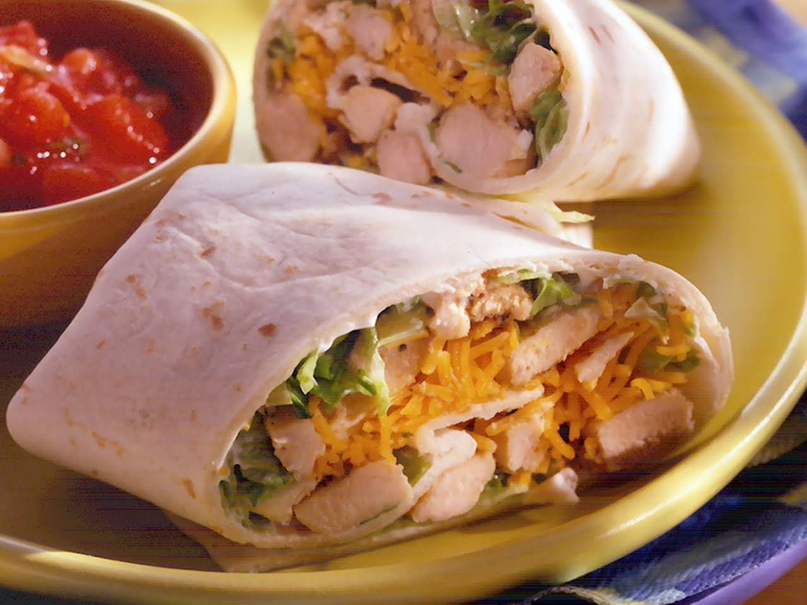

Chicken Tortilla Recipe

Tortillas are art hidden within food -albert tortillastein
The tortilla is a special wrap, filled with so much goodness!
The tortilla contains, proteins, carbs, vitamins and so many other nutrients important for your body
The tortilla is easy to eat, and take anywhere with you!
Ingredients
The following ingredients are for 6 tortillas
- Tortilla wraps - 6
- Mayonnaise, or any other condament to your liking - a couple spoons
- Yellow cheese, or any other you like - 6 slices
- Cucumber - 1
- Tomato - 1
- Cabbage - 6 large leaves/12 small leaves
- Chicken - 3 breasts
How to make
- Cook the chicken on medium heat for roughly 10 minutes, check that it is not pink on the inside
- Chop up: chicken, cucumber, tomato
- Lay the tortilla on a board and spread the condament on it
- Put each ingredient inside the tortilla one next to each other
- Wrap it up and enjoy!
Go Back